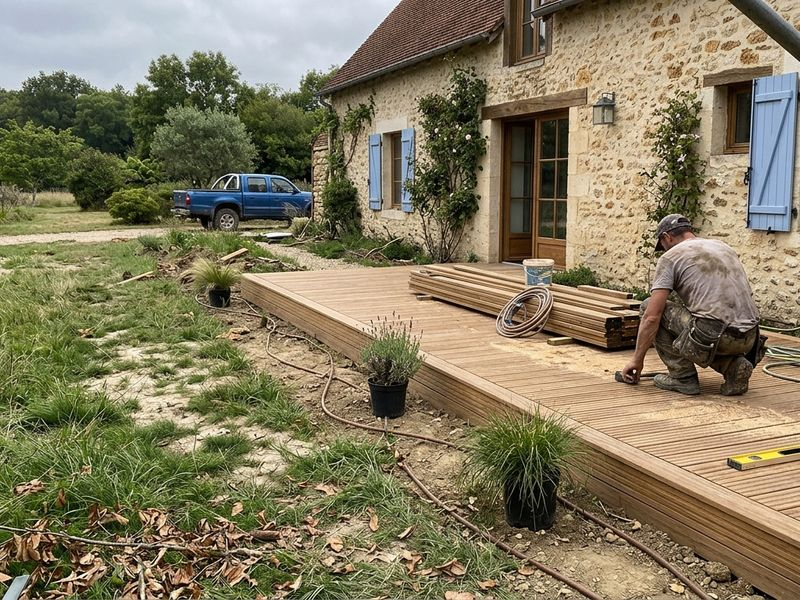
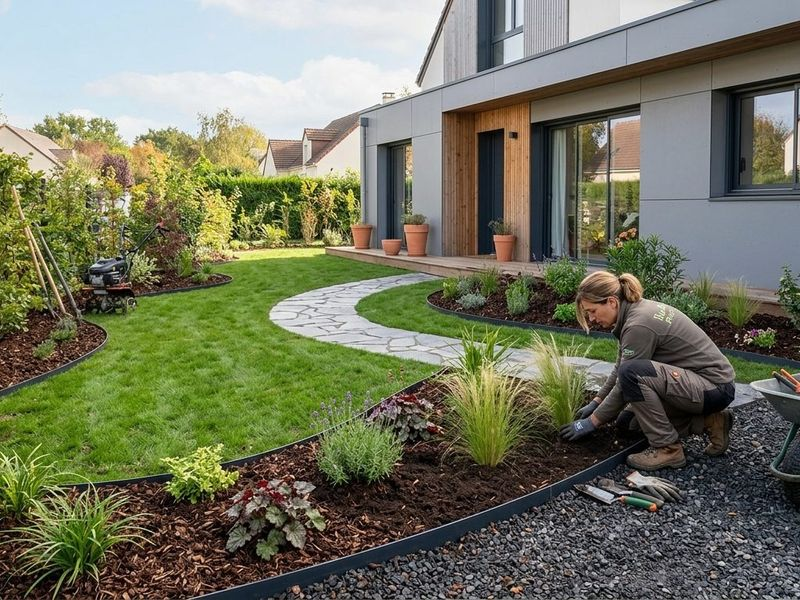
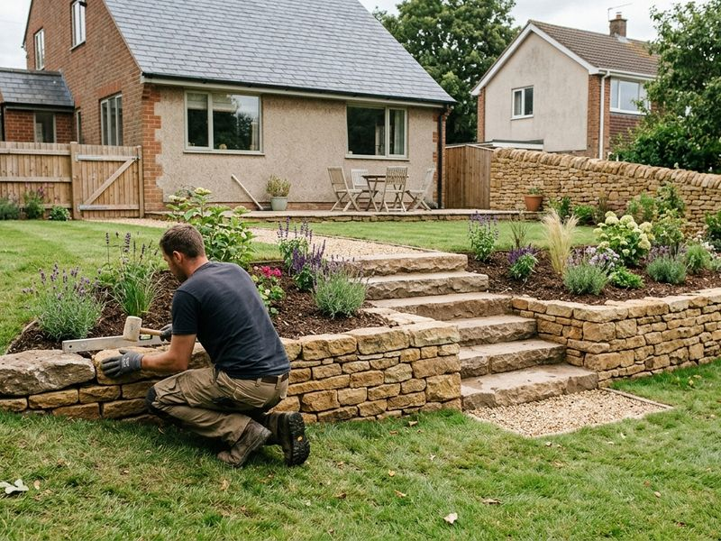
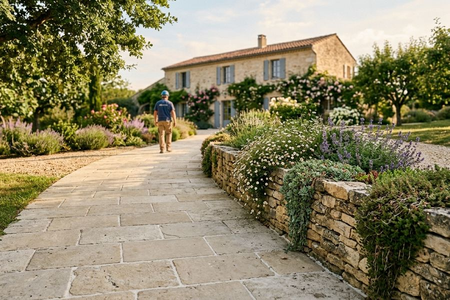
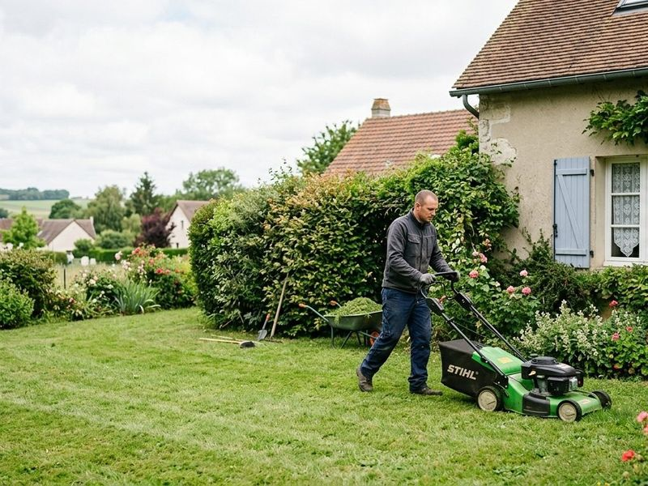

Prestations · Mantes-la-Jolie
Création, aménagement et entretien de vos espaces verts
De la conception de votre jardin à son entretien régulier, Dolino Hoffmann intervient à Mantes-la-Jolie et dans les environs.

Terrasses en bois
Une terrasse bien posée prolonge votre séjour dehors.

Création d’espaces verts
Conception et aménagement de votre espace vert, selon votre terrain.

Maçonnerie paysagère
Murets, escaliers et ouvrages en pierre pour structurer le jardin.
Nos prestations
Aménagement et entretien au fil de l’année
Chaque intervention est adaptée à votre terrain et à vos envies.

Allées et dallages
Pose d’allées et de dallages pour circuler dans votre jardin.

Plantations
Arbustes, massifs et végétaux installés avec soin.

Entretien du jardin
Tonte, taille et désherbage pour garder votre jardin net.
Parlons de votre projet
Un jardin à créer ou à entretenir ?
Appelez Dolino Hoffmann ou décrivez votre besoin, nous revenons vers vous.